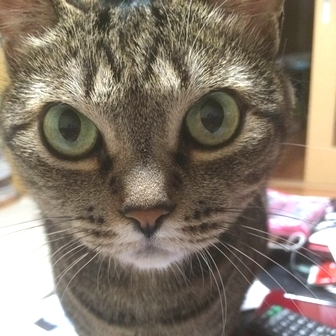
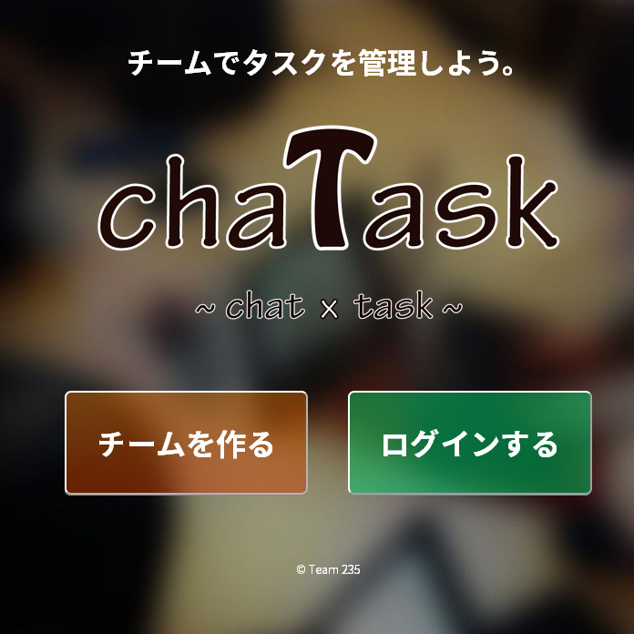
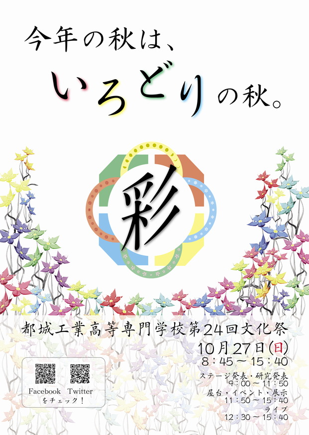
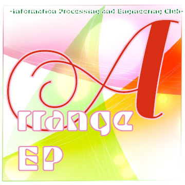

プロフィール
名前
Kaede Nishida
年齢
20
学歴
2010年4月 ~ 2015年3月
国立都城工業高等専門学校 電気情報工学科
2015年4月 ~
筑波大学 情報学群 知識情報・図書館学類（3年次編入）
作品
Webアプリケーション
chaTask
制作時期：2015年6月～7月
担当：ログイン・管理者機能実装、一部デザイン、ロゴ作成
使用技術：HTML5, CSS, JavaScript(JQuery), Node.js, Express, MongoDB
チームでチャットしながらタスクが管理できるアプリです。
シンプルかつ見やすく分かりやすい機能の実装とデザインを目指しました。
印刷物
都城工業高等専門学校第24回文化祭パンフレット、ポスター
制作時期：2013年7月~10月
担当：ポスター、パンフレット（校内マップ、一部ページ、表紙デザイン、一部広告）
使用ツール：Adobe Illustrator, Photoshop, Lightroom, Indesign
文化祭のパンフレットとポスターを制作しました。
「彩（いろどり）」というコンセプトのもと、カラフルさと四季の移り変わりをイメージして作りました。
また、ヒアリングのもと企業や小売店の広告作成も行いました。
情報処理部制作CD "Arrange EP"
制作時期：2014年10月
担当：ジャケットデザイン、楽曲
使用ツール：Adobe Illustrator
部活で制作したCDのジャケットデザインと楽曲提供をしました。
さわやかな明るさとかっこよさを目指しました。